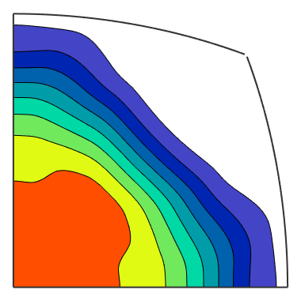
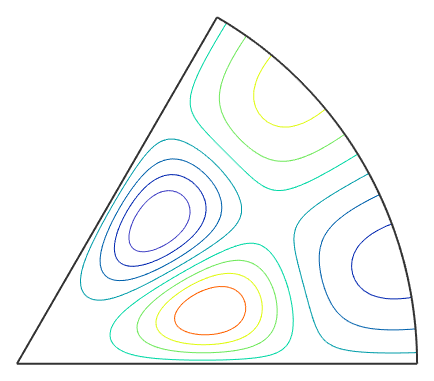

This site only covers on top differences to S2FunHarmonic. For a introduction to the essentials have a look here.
Definition via symmetrisation
The simplest way to define a S2FunHarmonicSym is through the symmetrisation of an ordinary S2FunHarmonic.
sF = S2FunHarmonic.quadrature(@(v) smiley(v)) cs = crystalSymmetry('432'); sFs1 = symmetrise(sF, cs); % * this symmetrises the function and gives back the result with the symmetry attached
sF = S2FunHarmonic bandwidth: 128 antipodal: true
Definition via function handle
If you have a function handle for the function you could create a S2FunHarmonicSym via quadrature. At first lets define a symmetry and a function handle which takes vector3d as an argument and returns double:
f = @(v) 0.1*(v.theta+sin(8*v.x).*sin(8*v.y));
cs = crystalSymmetry('6/m');Now you can call the quadrature command to get sFs2 of type S2FunHarmonicSym
sFs2 = S2FunHarmonicSym.quadrature(f, cs)
sFs2 = S2FunHarmonic symmetry: 6/m, X||a*, Y||b, Z||c* bandwidth: 128 antipodal: true
The plot commands for a S2FunHarmonicSym by default plot the function only on the fundamenta Sector of the symmetry. E.g. the default plot-command look as follows
plot(sFs1);
Another Example is the contour plot
contour(sFs2);
| S2FunHarmonicSym | a class represeneting a symmetrised function on the sphere |
| display | standard output |
| plot | Syntax |
| plus | Syntax |
| power | Syntax |
| quadrature | Syntax |
| rdivide | Syntax |
| steepestDescent | calculates the minimum of a spherical harminc |
| times | overloads sF1 .* sF2 |
| DocHelp 0.1 beta |